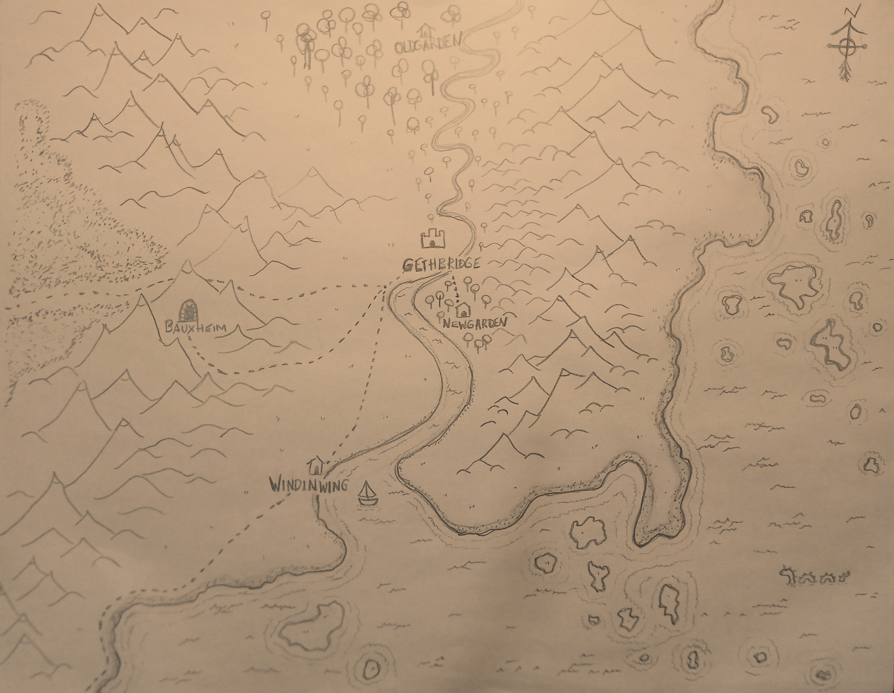

Region

Gethbridge
A human settlement, capital city of the region.
Newgarden
A forest gnome settlement.
Oldgarden
An ancient establishment, over a magic leyline intersection. Most recently inhabited by the ancestors of the gnomes of Newgarden.
Windinwing
A human port town, serving as a checkpoint between Gethbridge and the rest of the world. A clan of Seagull Aarakocra are the best sailors in the region.
Bauxheim
A dwarven establishment, known for exporting brick.